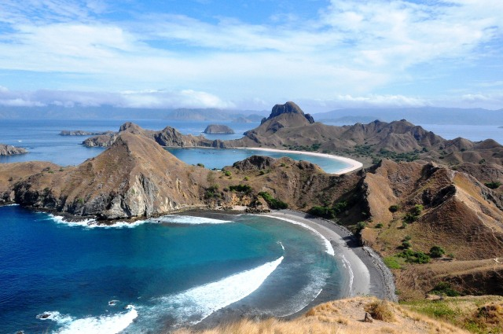
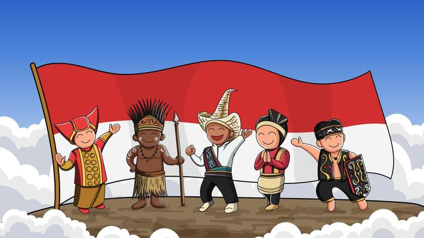
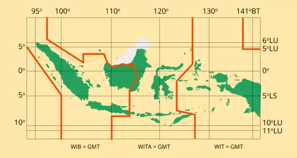
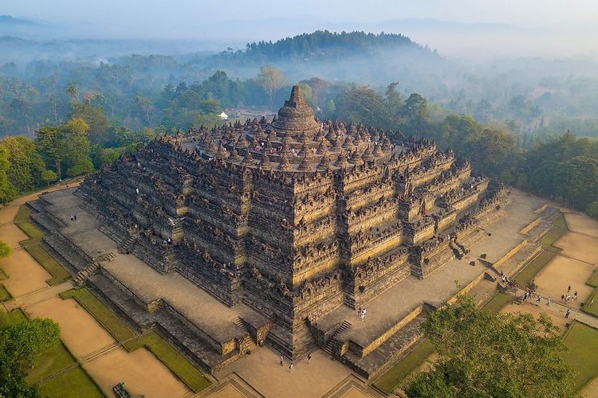
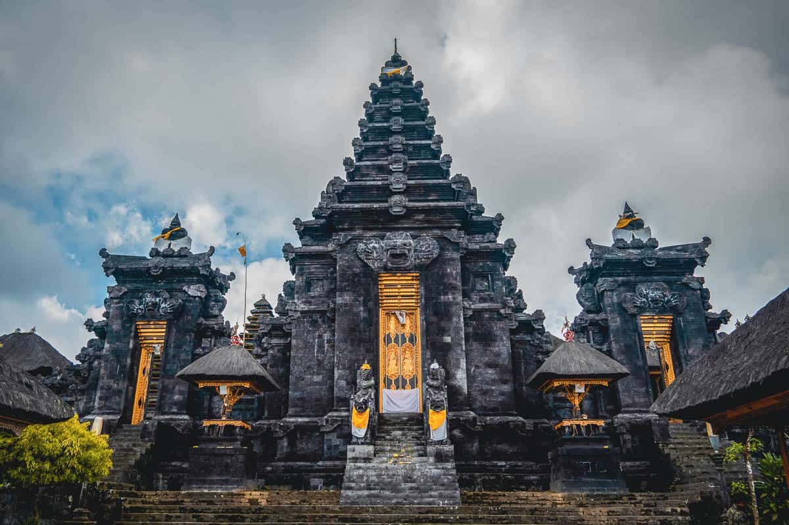

Kekayaan Alam

Indonesia memiliki kekayaan sumber daya alam yang sangat melimpah
dan beragam, termasuk hutan, laut, tambang, tanah, air, dan udara.
Hutan tropis Indonesia berperan penting sebagai paru-paru dunia
dengan menyerap karbon dan menghasilkan oksigen. Laut Indonesia kaya
akan ikan, rumput laut, minyak bumi, dan juga menjadi destinasi
wisata populer. Tambang di Indonesia meliputi minyak bumi, gas alam,
batu bara, bauksit, timah, tembaga, nikel, mangan, belerang, aspal,
dan yodium yang penting untuk industri. Tanah yang subur mendukung
pertanian dengan tanaman seperti padi dan jagung. Air dan udara juga
merupakan sumber daya vital bagi kehidupan dan industri.
Sumber daya alam ini digunakan untuk berbagai keperluan seperti
bahan bakar, industri, pertanian, dan perikanan. Pengelolaan yang
baik terhadap sumber daya alam ini diperlukan untuk memastikan
manfaat yang berkelanjutan bagi masyarakat dan perkembangan ekonomi
negara. Kekayaan alam Indonesia sangat penting untuk keberlangsungan
hidup manusia dan pertumbuhan ekonomi.
Sosial Budaya

Indonesia adalah negara dengan keragaman sosial budaya yang luar
biasa. Bahasa Indonesia berfungsi sebagai bahasa nasional di samping
lebih dari 700 bahasa daerah seperti Jawa, Sunda, dan Batak. Adat
istiadat seperti Ngaben di Bali dan Rambu Solo' di Tana Toraja
menunjukkan kekayaan tradisi yang unik di setiap daerah. Seni dan
budaya juga beragam dengan Tari Pendet dari Bali, Batik dari Jawa,
dan Wayang Kulit. Keberagaman agama mencakup Islam, Kristen, Hindu,
Buddha, serta kepercayaan lokal seperti Kejawen.
Keragaman ini juga terlihat dalam makanan tradisional seperti
Rendang dari Sumatera Barat dan Papeda dari Papua. Pakaian adat
seperti Kebaya dan Batik dari Jawa serta Ulos dari Batak
mencerminkan identitas budaya yang kuat. Rumah adat seperti Rumah
Joglo dan Rumah Gadang memperlihatkan kearifan lokal yang kaya.
Semua aspek ini berkontribusi pada identitas nasional yang beragam
dan kaya, yang harus dilestarikan dan dihargai.
Letak Geografis

Indonesia, yang terletak di Asia Tenggara antara benua Asia dan
Australia serta Samudra Pasifik dan Samudra Hindia, berada di antara
6° Lintang Utara hingga 11° Lintang Selatan, dan 95° hingga 141°
Bujur Timur. Sebagai negara kepulauan dengan sekitar 17.000 pulau
termasuk Sumatra, Jawa, Kalimantan, Sulawesi, dan Papua, Indonesia
memiliki iklim tropis dengan dua musim utama serta keanekaragaman
hayati yang tinggi.
Indonesia berbatasan dengan Malaysia, Singapura, Filipina, dan Laut
Cina Selatan di utara; Australia, Timor Leste, dan Samudra Hindia di
selatan; Samudra Hindia di barat; serta Papua Nugini dan Samudra
Pasifik di timur. Letaknya yang strategis di jalur pelayaran
internasional menjadikannya penting dalam perdagangan global
Wisata
Destinasi wisata secara sederhana dapat dimaknai sebagai tempat atau
daerah tujuan wisata yang menjadi daya tarik bagi wisatawan untuk
dikunjungi. Destinasi biasanya memiliki beragam fasilitas dan
atraksi wisata yang dapat dinikmati para wisatawan saat
berkunjung.Berikut adalah dua destinasi wisata paling terkenal di
Indonesia, serta latar belakangnya:
Borobudur Temple

Latar Belakang: Borobudur Temple adalah salah satu
situs UNESCO World Heritage yang terletak di Magelang, Jawa Tengah.
Dengan rating 4.7 dan 95,568 review, Borobudur Temple menawarkan
pengalaman bersejarah dan spiritual yang unik. Situs ini dibangun
pada abad ke-9 dan terdiri dari 2,600 relief dan 504 Buddha yang
menghadap ke arah timur. Borobudur Temple menjadi salah satu tempat
wisata terpopuler di Indonesia dan di dunia, menarik wisatawan dari
berbagai negara.
Alamat: Jl. Badrawati, Kw. Candi Borobudur,
Borobudur, Magelang Regency, Central Java, Indonesia
Pura Besakih

Latar Belakang: Pura Besakih adalah kompleks pura
Hindu terbesar di Bali, Indonesia. Dengan rating 4.7 dan 5,205
review, Pura Besakih menawarkan pengalaman spiritual dan budaya yang
unik. Pura ini terletak di kaki Gunung Agung dan memiliki struktur
arsitektur yang unik dan indah. Pura Besakih menjadi salah satu
tempat wisata terpopuler di Bali dan di Indonesia, menarik wisatawan
dari berbagai negara.
Alamat: Jl. Margo Mulyo Jl. Jend. Ahmad Yani
No.106, Ngupasan, Gondomanan, Yogyakarta City, Special Region of
Yogyakarta 55122, Indonesia
Kedua destinasi ini menawarkan pengalaman bersejarah, budaya, dan
spiritual yang unik dan mendunia, serta menjadi favorit wisatawan
dari berbagai negara.
{kind=link}